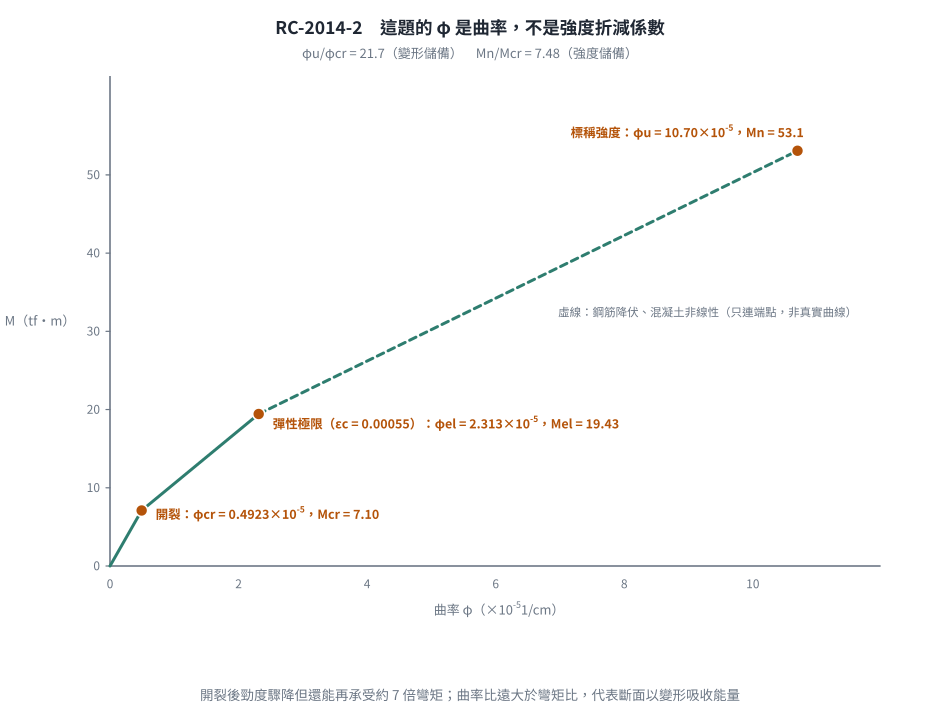

📄 題目正本：考卷原文・附圖・判讀清單（已確認）
RC-2014-2 題目正本
本檔只記錄考卷上寫了什麼、圖上畫了什麼，不含任何解法。解析見同資料夾
RC-2014-2.md。
判讀清單已經使用者確認（凍結）；本檔原則上不再修改（改動須回考卷原圖並記 log）。
| 項目 | 內容 |
|---|---|
| 考卷 | raw/exams/RC-2014_鋼筋混凝土設計與預力.pdf 第 1 頁（全一頁），第二題 |
| 考年 | 民國 103 年（2014） |
| 配分 | 25 分 |
| 附圖 | 無 |
| 判讀狀態 | 已確認（2026-11-12 使用者確認；轉錄 2026-11-12，PyMuPDF 110 dpi 全頁目視＋抽出文字核對；盲讀後才比對既有解析） |
1. 考卷原文（逐字）
二、有一單筋梁斷面 30×60 cm，有效梁深 d=53.5 cm，材料強度 $f'_c$=210 kgf/cm²、$f_y$=4,200 kgf/cm²，並取混凝土之比例限度應變為 $\varepsilon_{el}$=0.00055，若該斷面之鋼筋量為 $A_s$=30.4 cm²，試計算並列表下列各值：在開裂時之 $\phi_{cr}$、$M_{cr}$；最大彈性變形之 $\phi_{el}$、$M_{el}$；在達規範所訂計算強度時之 $\phi_u$、$M_n$；並計算 $\phi_u/\phi_{cr}$ 與 $M_n/M_{cr}$ 之比值及說明其意義。（25 分）
2. 考卷給的公式、附表與參數
- 卷首作答規範與「可能使用之公式」同 RC-2014-1（土木 401-100；$\phi$ 過渡式、$E_s=2.04\times10^6$、$E_c=15000\sqrt{f'_c}$、$V_c$ 兩式、$M_m$、$\beta_1$），本題相關者為 $E_s$、$E_c$、$\beta_1$。
- 題文數值：$b=30$、$h=60$ cm，$d=53.5$ cm；$f'_c=210$、$f_y=4200$ kgf/cm²；$\varepsilon_{el}=0.00055$；$A_s=30.4$ cm²。
- 沒有給：開裂模數 $f_r$（卷首公式列表也沒有）、$\varepsilon_{cu}$、斷面圖。
- 卷首注意事項：㈠可以使用電子計算器；㈡不必抄題。
3. 附圖
本題無附圖。
4. 判讀清單
「把握」標不確定者請優先確認；解讀類項目（題目用字的意思）另標「解讀」。
| # | 項目 | 判讀 | 圖上／題文依據 | 把握 |
|---|---|---|---|---|
| 1 | 斷面 | 矩形 $b=30$、$h=60$ cm（「30×60」寬×高），$d=53.5$ cm，單筋 | 題文 | 確定（解讀） |
| 2 | 符號 $\phi$ | 本題 $\phi_{cr}$、$\phi_{el}$、$\phi_u$ 為曲率，不是強度折減係數 | 題文「開裂時之 $\phi_{cr}$、$M_{cr}$」成對出現 | 確定（解讀） |
| 3 | 開裂點 | 以規範開裂模數 $f_r$ 計 $M_{cr}$；$f_r$ 考卷未給，須取規範值 | 題文；卷首公式無 $f_r$ | 確定（解讀） |
| 4 | 彈性極限點 | 混凝土受壓外緣應變達 $\varepsilon_{el}=0.00055$ 時的 $\phi_{el}$、$M_{el}$ | 題文「比例限度應變」 | 確定（解讀） |
| 5 | 極限點 | 「規範所訂計算強度」＝標稱強度 $M_n$（等值應力塊、$\varepsilon_{cu}=0.003$），$\phi_u$ 為此時曲率 | 題文 | 確定（解讀） |
| 6 | 輸出 | 列表三組值＋$\phi_u/\phi_{cr}$、$M_n/M_{cr}$ 兩比值＋意義說明 | 題文 | 確定 |
| 7 | 考卷沒有給 | $f_r$、$\varepsilon_{cu}$ | 全題 | 確定 |
轉錄：2026-11-12（RC-U1-1 題目正本推廣・批 1）
確認：2026-11-12 使用者確認（RC-U1-1 題目正本推廣・批 1，關卡一）
考題編號：RC-2014-2
主分類： RC-U1-1 RC 梁彎矩強度分析與設計
副分類： RC-U3-1 梁工作性要求（含撓度、裂縫）
設計法： USD 強度設計法
標籤： 彎矩曲率分析 開裂彎矩 比例限度應變 曲率韌性 轉換斷面法 三階段分析 Whitney應力塊 曲率延展比
1. 題目（考卷原文見題目正本）
考卷原文、公式／附表與判讀清單（已確認）見
RC-2014-2-problem.md。本節只列解題時最容易讀錯的地方與本解使用的記號；題意以題目正本為準。
常見誤讀
| 項目 | 正確判讀 | 常見誤讀 |
|---|---|---|
| 符號 $\phi$ | $\phi_{cr}$、$\phi_{el}$、$\phi_u$ 是曲率（判讀 #2） | 當成強度折減係數 |
| 斷面 | $b=30$、$h=60$ cm（寬 × 高），$d=53.5$ cm（判讀 #1） | 寬高顛倒 |
| 開裂 | $f_r$ 考卷沒給，取規範 $2\sqrt{f'_c}$（判讀 #3） | 以為題目漏給而無法算 |
| 彈性極限 | 受壓外緣應變達 $\varepsilon_{el}=0.00055$（判讀 #4） | 以鋼筋降伏當彈性極限 |
| 極限點 | 標稱強度 $M_n$（等值應力塊、$\varepsilon_{cu}=0.003$）（判讀 #5） | 乘 $\phi$ |
本解記號： $\phi_{cr}$、$\phi_{el}$、$\phi_u$＝曲率（rad/cm）；$I_t$、$y_b$＝未開裂換算斷面慣性矩與形心至底距離；$n=E_s/E_c$。
2. 考題核心精神與出題者意圖 (Core Concepts & Examiner's Intent)
核心精神：
本題考查梁斷面在載重增加過程中，從彈性至極限的三個關鍵狀態，要求考生掌握：
- 開裂前以未開裂轉換斷面分析
- 開裂後以開裂轉換斷面進行彈性分析
- 達到極限強度時以 Whitney 等值矩形應力塊計算
題目特別要求計算 $\phi_u/\phi_{cr}$（曲率韌性）和 $M_n/M_{cr}$（強度儲備比），考驗對斷面延性行為的宏觀理解。
出題者意圖：
- 測試三種不同計算模型的靈活切換
- 驗算對 $\varepsilon_{el}$（比例限度）概念的理解：混凝土應力-應變曲線在 $\varepsilon_{el}$ 以內為線性彈性
- 透過韌性比率考查對延性設計哲學的認識
3. 解題戰略地圖與陷阱分析 (Strategic Roadmap & Trap Analysis)
三階段作戰計畫：
Stage 1（開裂）：未開裂轉換斷面
→ 計算 Ec、n
→ 求未開裂轉換斷面重心 ȳ、慣性矩 I_t
→ Mcr = fr × I_t / y_b，φcr = fr / (Ec × y_b)
Stage 2（最大彈性）：開裂轉換斷面
→ 求開裂中性軸深度 kd（二次方程）
→ 計算開裂慣性矩 I_cr
→ φel = εel / kd，Mel = Ec × εel × I_cr / kd
Stage 3（計算強度）：Whitney 應力塊（USD）
→ 假設鋼筋降伏 → 計算 a、c
→ 驗算 εt（確認降伏）
→ φu = εcu / c，Mn = As × fy × (d - a/2)
關鍵陷阱：
| # | 陷阱 | 應對策略 |
|---|---|---|
| 1 | 三個階段用同一個中性軸深度：誤以為 kd（開裂彈性）= c（極限） | Stage 2 用 kd（轉換斷面二次方程）；Stage 3 用 c（Whitney 力平衡）；兩者不同 |
| 2 | Stage 1 用開裂斷面（I_cr）：開裂時仍為未開裂狀態 | Stage 1 必須用未開裂轉換斷面 I_t，重心位置也不同 |
| 3 | 混淆 φ 為強度折減係數：特別在 Stage 3，容易誤以為 φu = 0.9 | 本題全部 φ 均指曲率（rad/cm），需從應變分布計算 |
| 4 | 開裂後曲率「跳躍」：斷面開裂後，即使 M 不變，曲率因 I 急降而瞬間增大 | φcr（未開裂）≠ 開裂後在 Mcr 時的曲率；此題只需計算未開裂側的 φcr |
3.5 變數層次分析 (Variable Hierarchy Analysis)
複習提示：第一次解題後，在每個卡住的知識點旁標記
⚠；第二次複習時只看有⚠的項目。
最終目標
三階段曲率 φcr、φel、φu 與對應彎矩；計算 φu/φcr 與 Mn/Mcr 並說明意義
本題關鍵公式（依計算順序）
$\boxed{\cdot}$ = 需由前步驟推導，非題目直接給定的變數
$$\text{Step 1（彈性模數與模數比）:}\quad E_c = 15000\sqrt{f'_c},\quad n = E_s/E_c$$
$$\text{Step 2（未開裂轉換斷面）:}\quad \bar{y} = \frac{bh(h/2) + (n-1)A_s\,d}{bh + (n-1)A_s},\quad y_b = h - \boxed{\bar{y}}$$
$$\text{Step 3（開裂彎矩與曲率）:}\quad M_{cr} = f_r \cdot I_t / \boxed{y_b},\quad \phi_{cr} = f_r / (E_c \cdot \boxed{y_b})$$
$$\text{Step 4（開裂中性軸）:}\quad b\,\frac{(kd)^2}{2} = n\,A_s\,(d - kd) \;\Rightarrow\; \text{二次方程求}\ \boxed{kd}$$
$$\text{Step 5（最大彈性）:}\quad \phi_{el} = \varepsilon_{el} / \boxed{kd},\quad M_{el} = E_c\,\varepsilon_{el}\,I_{cr}/\boxed{kd}$$
$$\text{Step 6（計算強度）:}\quad a = A_s f_y/(0.85 f'_c b),\quad \phi_u = \varepsilon_{cu}/\boxed{c},\quad M_n = A_s f_y(d - \boxed{a}/2)$$
L1：題目直接給定
| 符號 | 數值 | 說明 |
|---|---|---|
| $b$ | 30 cm | 梁寬 |
| $h$ | 60 cm | 梁高（從斷面尺寸讀出） |
| $d$ | 53.5 cm | 有效深度 |
| $A_s$ | 30.4 cm² | 鋼筋量 |
| $f'_c$ | 210 kgf/cm² | 混凝土強度 |
| $f_y$ | 4,200 kgf/cm² | 鋼筋降伏強度 |
| $E_s$ | 2.04×10⁶ kgf/cm² | 鋼筋彈性模數（題目提供） |
| $\varepsilon_{el}$ | 0.00055 | 混凝土比例限度應變（題目給定） |
| $\varepsilon_{cu}$ | 0.003 | 混凝土極限壓縮應變（規範） |
L2：需知識點推導
Step 1：材料係數
| 符號 | 公式／來源 | 卡關? |
|---|---|---|
| $E_c$ | $15000\sqrt{f'_c} = 15000\sqrt{210} = 217{,}371\ \text{kgf/cm}^2$ | |
| $n$ | $E_s/E_c = 2{,}040{,}000/217{,}371 = 9.385$ | |
| $f_r$ | $2\sqrt{f'_c} = 2\sqrt{210} = 28.98\ \text{kgf/cm}^2$（彎曲模數） |
Step 2：未開裂轉換斷面
| 符號 | 公式／來源 | 卡關? |
|---|---|---|
| $(n-1)A_s$ | $8.385 \times 30.4 = 254.9\ \text{cm}^2$（鋼筋換算面積增量） | |
| $\bar{y}$ | $\frac{1800\times30 + 254.9\times53.5}{2054.9} = 32.92\ \text{cm}$（距頂） | |
| $y_b$ | $60 - 32.92 = 27.08\ \text{cm}$（重心至底拉力纖維距離） | |
| $I_t$ | $540{,}000 + 1800\times(2.92)^2 + 254.9\times(20.58)^2 = 663{,}308\ \text{cm}^4$ |
Step 3：開裂曲率
| 符號 | 公式／來源 | 卡關? |
|---|---|---|
| $M_{cr}$ | $f_r \cdot I_t/y_b = 28.98\times663{,}308/27.08 = 709{,}718\ \text{kgf·cm}$ | |
| $\phi_{cr}$ | $f_r/(E_c \cdot y_b) = 28.98/(217{,}371\times27.08) = 4.923\times10^{-6}\ \text{rad/cm}$ |
Step 4：開裂轉換斷面中性軸
| 符號 | 公式／來源 | 卡關? |
|---|---|---|
| 二次方程 | $15\,(kd)^2 + 285.3\,kd - 15{,}263.6 = 0$ | |
| $kd$ | 正根 $= 23.78\ \text{cm}$ | |
| $I_{cr}$ | $30(23.78)^3/3 + 9.385\times30.4\times(29.72)^2 = 386{,}428\ \text{cm}^4$ |
Step 5：最大彈性曲率
| 符號 | 公式／來源 | 卡關? |
|---|---|---|
| $\phi_{el}$ | $\varepsilon_{el}/kd = 0.00055/23.78 = 2.313\times10^{-5}\ \text{rad/cm}$ | |
| $\sigma_{el}$ | $E_c\,\varepsilon_{el} = 217{,}371\times0.00055 = 119.55\ \text{kgf/cm}^2$ | |
| $M_{el}$ | $\sigma_{el}\,I_{cr}/kd = 119.55\times386{,}428/23.78 = 1{,}942{,}794\ \text{kgf·cm}$ |
Step 6：計算強度曲率
| 符號 | 公式／來源 | 卡關? |
|---|---|---|
| $\beta_1$ | $f'_c=210\leq280 \Rightarrow \beta_1=0.85$ | |
| $a$ | $A_sf_y/(0.85f'_cb) = 127{,}680/5355 = 23.84\ \text{cm}$ | |
| $c$ | $a/\beta_1 = 23.84/0.85 = 28.05\ \text{cm}$ | |
| $\varepsilon_t$ | $0.003\times(53.5-28.05)/28.05 = 0.002722 > \varepsilon_y=0.00206$ ✓ 鋼筋降伏 | |
| $\phi_u$ | $\varepsilon_{cu}/c = 0.003/28.05 = 1.070\times10^{-4}\ \text{rad/cm}$ | |
| $M_n$ | $A_sf_y(d-a/2) = 127{,}680\times41.58 = 5{,}309{,}590\ \text{kgf·cm}$ |
L3：深層知識（不懂就卡住）
| 知識點 | 說明 | 卡關? |
|---|---|---|
| 三個不同的中性軸 | 未開裂：重心 ȳ=32.92 cm；開裂彈性：kd=23.78 cm；極限：c=28.05 cm —— 三個值都不同，不可混用 | |
| 比例限度應變的意義 | $\varepsilon_{el}=0.00055$ 是混凝土仍為線性彈性的最大應變；超過後混凝土開始進入非線性段，彈性分析失效 | |
| 開裂後的曲率「跳躍」 | 斷面開裂時 I 從 $I_t$ 急降至 $I_{cr}$；即使 M 不變，曲率瞬間增大。故 $\phi_{cr}$（未開裂側）≠ $M_{cr}/(E_c I_{cr})$ | |
| $kd \neq c$ 的物理原因 | $kd$：彈性中性軸，由截面積矩平衡（n 倍換算）確定；$c$：極限狀態，由應力塊力平衡（$0.85f'c$均布）確定 |
4. 步驟化詳細計算過程 (Step-by-Step Detailed Calculation)
前置：材料常數
$$E_c = 15000\sqrt{f'_c} = 15000\sqrt{210} = 15000 \times 14.491 = \boxed{217{,}371\ \text{kgf/cm}^2}$$
$$n = \frac{E_s}{E_c} = \frac{2{,}040{,}000}{217{,}371} = \boxed{9.385}$$
$$f_r = 2\sqrt{f'_c} = 2\sqrt{210} = \boxed{28.98\ \text{kgf/cm}^2} \quad \text{（彎曲模數）}$$
$$\varepsilon_y = \frac{f_y}{E_s} = \frac{4200}{2{,}040{,}000} = \boxed{0.002059}$$
Stage 1：開裂（Cracking）— 未開裂轉換斷面
未開裂轉換斷面幾何：
額外鋼筋換算面積：$(n-1)A_s = (9.385-1) \times 30.4 = 8.385 \times 30.4 = 254.9\ \text{cm}^2$
重心距頂面（取矩）：
$$\bar{y} = \frac{b\cdot h \cdot (h/2) + (n-1)A_s \cdot d}{b\cdot h + (n-1)A_s} = \frac{30\times60\times30 + 254.9\times53.5}{1800 + 254.9} = \frac{54{,}000 + 13{,}637}{2054.9} = \boxed{32.92\ \text{cm}}$$
底拉力纖維至重心距離：$y_b = 60 - 32.92 = \boxed{27.08\ \text{cm}}$
未開裂轉換斷面慣性矩：
$$I_t = \frac{b\,h^3}{12} + b\cdot h\cdot\!\left(\frac{h}{2} - \bar{y}\right)^{\!2} + (n-1)A_s\,(d-\bar{y})^2$$
$$= 540{,}000 + 1800\times(30-32.92)^2 + 254.9\times(53.5-32.92)^2$$
$$= 540{,}000 + 1800\times8.526 + 254.9\times423.54$$
$$= 540{,}000 + 15{,}347 + 107{,}960 = \boxed{663{,}307\ \text{cm}^4}$$
開裂彎矩與曲率：
$$M_{cr} = \frac{f_r \cdot I_t}{y_b} = \frac{28.98 \times 663{,}307}{27.08} = \boxed{709{,}700\ \text{kgf·cm} = 7.097\ \text{tf·m}}$$
$$\boxed{\phi_{cr} = \frac{f_r}{E_c \cdot y_b} = \frac{28.98}{217{,}371 \times 27.08} = 4.923 \times 10^{-6}\ \text{rad/cm}}$$
（驗算：$M_{cr}/(E_c I_t) = 709{,}700/(217{,}371\times663{,}307) = 4.923\times10^{-6}$ ✓）
Stage 2：最大彈性變形（Maximum Elastic）— 開裂轉換斷面
開裂中性軸深度 $kd$：
截面積矩平衡（壓力區混凝土 = 拉力區換算鋼筋）：
$$\frac{b\,(kd)^2}{2} = n\,A_s\,(d - kd)$$
$$\frac{30\,(kd)^2}{2} = 9.385 \times 30.4 \times (53.5 - kd) = 285.3\,(53.5 - kd)$$
$$15\,(kd)^2 + 285.3\,(kd) - 15{,}263.6 = 0$$
$$kd = \frac{-285.3 + \sqrt{285.3^2 + 4\times15\times15{,}263.6}}{30} = \frac{-285.3 + \sqrt{997{,}212}}{30} = \frac{-285.3 + 998.6}{30} = \boxed{23.78\ \text{cm}}$$
開裂轉換斷面慣性矩：
$$I_{cr} = \frac{b\,(kd)^3}{3} + n\,A_s\,(d - kd)^2 = \frac{30\times(23.78)^3}{3} + 285.3\times(53.5-23.78)^2$$
$$= 134{,}437 + 285.3\times882.9 = 134{,}437 + 252{,}011 = \boxed{386{,}448\ \text{cm}^4}$$
最大彈性曲率與彎矩（$\varepsilon_{c,top} = \varepsilon_{el} = 0.00055$）：
$$\boxed{\phi_{el} = \frac{\varepsilon_{el}}{kd} = \frac{0.00055}{23.78} = 2.313 \times 10^{-5}\ \text{rad/cm}}$$
混凝土頂面應力（驗算仍在線性範圍）：
$$\sigma_{el} = E_c\,\varepsilon_{el} = 217{,}371\times0.00055 = 119.55\ \text{kgf/cm}^2 < 0.85f'_c = 178.5\ \text{kgf/cm}^2\ ✓$$
$$\boxed{M_{el} = \sigma_{el}\cdot\frac{I_{cr}}{kd} = 119.55 \times \frac{386{,}448}{23.78} = 119.55 \times 16{,}251 = 1{,}942{,}803\ \text{kgf·cm} = 19.43\ \text{tf·m}}$$
鋼筋應力驗算（確認未降伏）：
$$\varepsilon_s = \varepsilon_{el}\times\frac{d-kd}{kd} = 0.00055\times\frac{29.72}{23.78} = 0.000687$$
$$f_s = E_s\,\varepsilon_s = 2{,}040{,}000\times0.000687 = 1{,}402\ \text{kgf/cm}^2 < f_y = 4{,}200\ ✓$$
Stage 3：計算強度（Nominal Strength）— Whitney 等值矩形應力塊
$$\beta_1 = 0.85 \quad (f'_c = 210 \leq 280)$$
假設鋼筋降伏，力平衡求 $a$：
$$a = \frac{A_s\,f_y}{0.85\,f'_c\,b} = \frac{30.4\times4200}{0.85\times210\times30} = \frac{127{,}680}{5355} = \boxed{23.84\ \text{cm}}$$
$$c = \frac{a}{\beta_1} = \frac{23.84}{0.85} = \boxed{28.05\ \text{cm}}$$
驗算鋼筋降伏：
$$\varepsilon_t = \varepsilon_{cu}\cdot\frac{d-c}{c} = 0.003\times\frac{53.5-28.05}{28.05} = 0.003\times0.9073 = 0.002722 > \varepsilon_y = 0.002059\ ✓$$
（斷面狀態：$0.002 < \varepsilon_t = 0.002722 < 0.005$，過渡區；若計算強度折減係數則 $\phi_{sd} = 0.65+(0.002722-0.002)\times83.33 = 0.710$，但本題不需要）
曲率與標稱彎矩：
$$\boxed{\phi_u = \frac{\varepsilon_{cu}}{c} = \frac{0.003}{28.05} = 1.070\times10^{-4}\ \text{rad/cm}}$$
$$\boxed{M_n = A_s\,f_y\!\left(d - \frac{a}{2}\right) = 30.4\times4200\times\left(53.5 - 11.92\right) = 127{,}680\times41.58 = 5{,}309{,}590\ \text{kgf·cm} = 53.10\ \text{tf·m}}$$
彙總表與比值
| 階段 | 曲率 $\phi$ (rad/cm) | 彎矩 $M$ (tf·m) |
|---|---|---|
| 開裂 $(\phi_{cr},\ M_{cr})$ | $4.923 \times 10^{-6}$ | $7.097$ |
| 最大彈性 $(\phi_{el},\ M_{el})$ | $2.313 \times 10^{-5}$ | $19.43$ |
| 計算強度 $(\phi_u,\ M_n)$ | $1.070 \times 10^{-4}$ | $53.10$ |
$$\boxed{\frac{\phi_u}{\phi_{cr}} = \frac{1.070\times10^{-4}}{4.923\times10^{-6}} = 21.7}$$
$$\boxed{\frac{M_n}{M_{cr}} = \frac{53.10}{7.097} = 7.48}$$

圖 1 三個特徵點畫在同一張 $M$–$\phi$ 圖上，曲率比 21.7 遠大於彎矩比 7.48。這張圖攔下兩個錯：把本題的 $\phi$ 當成強度折減係數，以及把兩個比值的意義講反——曲率比代表變形儲備，彎矩比代表強度儲備。
5. 關鍵爭議點與進階探討 (Critical Issues & Advanced Discussion)
① $\phi_u/\phi_{cr} = 21.7$ 的工程意義（曲率韌性）
此比值稱為曲率韌性指數（curvature ductility factor）$\mu_\phi$，表示：
從第一條裂縫出現（$\phi_{cr}$）到斷面達到極限強度（$\phi_u$），曲率增加了 21.7 倍。高 $\mu_\phi$ 代表斷面在破壞前有充分的變形能力（延性），能通過大量裂縫開展分散地震或衝擊能量，避免突然脆性破壞。耐震設計要求高韌性，就是要求高 $\mu_\phi$。
② $M_n/M_{cr} = 7.48$ 的工程意義（強度儲備比）
此比值表示：標稱彎矩強度是開裂彎矩的 7.48 倍。
實務意義：梁在服務載重下（通常 $M_{service} \approx M_{cr}$ 附近）一旦開裂，實際上距離破壞還有很大餘量。這也解釋了為什麼 RC 梁設計允許斷面開裂（與混凝土柱或預力梁的不開裂要求不同）——依賴鋼筋承受拉力，即使混凝土裂開，梁仍能維持 $\gg M_{cr}$ 的強度。
③ 三段斷面剛度的物理意義
| 段 | 斷面狀態 | 剛度 $E_c I$ | 特點 |
|---|---|---|---|
| 段1（0→$\phi_{cr}$） | 未開裂 | $E_c I_t = 1.44\times10^{11}$ kgf·cm² | 最硬，混凝土全斷面受力 |
| 段2（$\phi_{cr}$→$\phi_{el}$） | 開裂彈性 | $E_c I_{cr} = 8.40\times10^{10}$ kgf·cm² | 開裂後剛度降為原來 58% |
| 段3（$\phi_{el}$→$\phi_u$） | 非線性 | 漸降至 0 | 混凝土進入非線性，鋼筋接近降伏 |
$I_{cr}/I_t = 386{,}448/663{,}307 = 0.583$，開裂後斷面剛度僅剩 58%，這就是 ACI「有效慣性矩 $I_e$」公式（Branson 公式）在開裂彎矩以上要折減剛度的原因。
④ 此題梁不符合延性要求的注意事項
$\varepsilon_t = 0.00272$ 介於 0.002 與 0.005 之間，屬過渡區；且 $\varepsilon_t < 0.004$，未達梁的最低延性要求（$\varepsilon_t \geq 0.004$）。考場上應予以注明，但題目仍要求計算 $M_n$，故仍照規範公式執行。此梁若為實際設計，應減少鋼筋量以提高 $\varepsilon_t$ 至 0.004 以上。
修正日期：2026-11-12（§1 改為指向題目正本）
圖解補繪：2026-11-13（圖 1 彎矩–曲率三特徵點；向量圖，腳本 gen_RC-2014-2.py，可重跑，檔尾對 §4 公佈值 assert；非勘誤）